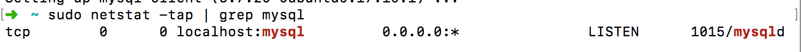
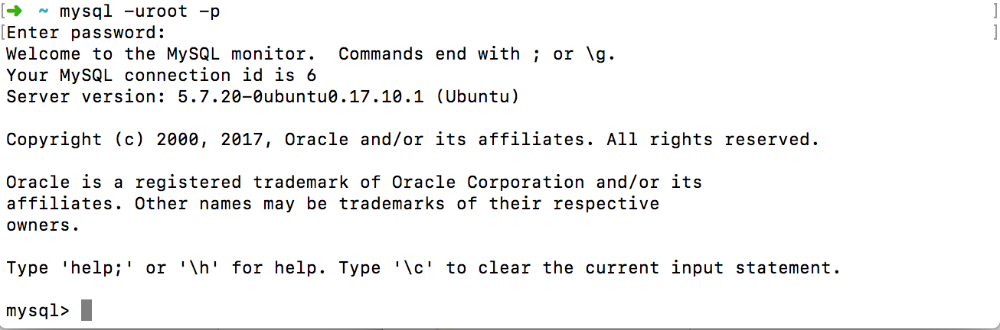
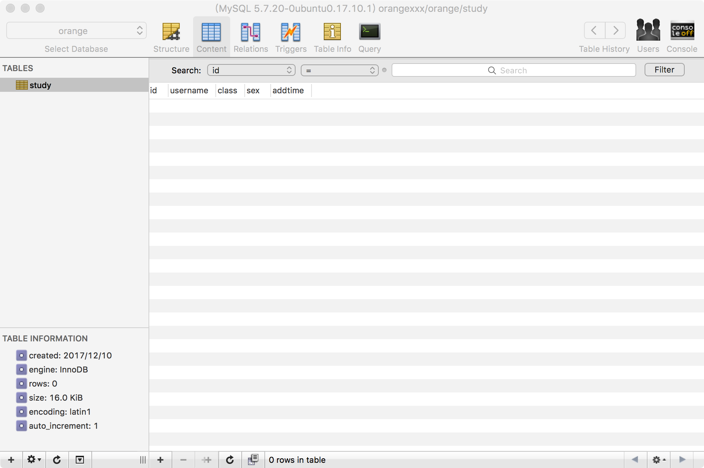

<!DOCTYPE HTML>
<html lang="" >
    <head>
        <meta charset="UTF-8">
        <meta content="text/html; charset=utf-8" http-equiv="Content-Type">
        <title>搭建MySQL服务 · GitBook</title>
        <meta http-equiv="X-UA-Compatible" content="IE=edge" />
        <meta name="description" content="">
        <meta name="generator" content="GitBook 3.2.3">
        
        
        
    
    <link rel="stylesheet" href="../gitbook/style.css">

    
            
                
                <link rel="stylesheet" href="../gitbook/gitbook-plugin-highlight/website.css">
                
            
                
                <link rel="stylesheet" href="../gitbook/gitbook-plugin-search/search.css">
                
            
                
                <link rel="stylesheet" href="../gitbook/gitbook-plugin-fontsettings/website.css">
                
            
        

    

    
        
    
        
    
        
    
        
    
        
    
        
    

        
    
    
    <meta name="HandheldFriendly" content="true"/>
    <meta name="viewport" content="width=device-width, initial-scale=1, user-scalable=no">
    <meta name="apple-mobile-web-app-capable" content="yes">
    <meta name="apple-mobile-web-app-status-bar-style" content="black">
    <link rel="apple-touch-icon-precomposed" sizes="152x152" href="../gitbook/images/apple-touch-icon-precomposed-152.png">
    <link rel="shortcut icon" href="../gitbook/images/favicon.ico" type="image/x-icon">

    
    <link rel="next" href="gist.html" />
    
    
    <link rel="prev" href="scienceSurface.html" />
    

    </head>
    <body>
        
<div class="book">
    <div class="book-summary">
        
            
<div id="book-search-input" role="search">
    <input type="text" placeholder="Type to search" />
</div>

            
                <nav role="navigation">
                


<ul class="summary">
    
    

    

    
        
        
    
        <li class="chapter " data-level="1.1" data-path="../">
            
                <a href="../">
            
                    
                    Introduction
            
                </a>
            

            
        </li>
    
        <li class="chapter " data-level="1.2" data-path="../babel/">
            
                <a href="../babel/">
            
                    
                    Babel
            
                </a>
            

            
            <ul class="articles">
                
    
        <li class="chapter " data-level="1.2.1" data-path="../babel/note.html">
            
                <a href="../babel/note.html">
            
                    
                    学习笔记
            
                </a>
            

            
        </li>
    
        <li class="chapter " data-level="1.2.2" data-path="../babel/babel-plugin.html">
            
                <a href="../babel/babel-plugin.html">
            
                    
                    Babel Plugin
            
                </a>
            

            
        </li>
    
        <li class="chapter " data-level="1.2.3" data-path="../babel/ast.html">
            
                <a href="../babel/ast.html">
            
                    
                    AST
            
                </a>
            

            
        </li>
    

            </ul>
            
        </li>
    
        <li class="chapter " data-level="1.3" data-path="../tools/">
            
                <a href="../tools/">
            
                    
                    工具库
            
                </a>
            

            
            <ul class="articles">
                
    
        <li class="chapter " data-level="1.3.1" data-path="../tools/lruCache.html">
            
                <a href="../tools/lruCache.html">
            
                    
                    lru-cache
            
                </a>
            

            
        </li>
    
        <li class="chapter " data-level="1.3.2" data-path="../tools/commander.html">
            
                <a href="../tools/commander.html">
            
                    
                    commander
            
                </a>
            

            
        </li>
    
        <li class="chapter " data-level="1.3.3" data-path="../tools/hilo.html">
            
                <a href="../tools/hilo.html">
            
                    
                    hilo
            
                </a>
            

            
        </li>
    
        <li class="chapter " data-level="1.3.4" data-path="../tools/anyproxy.html">
            
                <a href="../tools/anyproxy.html">
            
                    
                    anyproxy
            
                </a>
            

            
        </li>
    
        <li class="chapter " data-level="1.3.5" data-path="../tools/clipboard.html">
            
                <a href="../tools/clipboard.html">
            
                    
                    clipboard
            
                </a>
            

            
        </li>
    

            </ul>
            
        </li>
    
        <li class="chapter " data-level="1.4" data-path="../tech/">
            
                <a href="../tech/">
            
                    
                    技术文章
            
                </a>
            

            
            <ul class="articles">
                
    
        <li class="chapter " data-level="1.4.1" data-path="../tech/ss.html">
            
                <a href="../tech/ss.html">
            
                    
                    SS & SSR
            
                </a>
            

            
        </li>
    
        <li class="chapter " data-level="1.4.2" data-path="../tech/pac.html">
            
                <a href="../tech/pac.html">
            
                    
                    PAC
            
                </a>
            

            
        </li>
    

            </ul>
            
        </li>
    
        <li class="chapter " data-level="1.5" data-path="./">
            
                <a href="./">
            
                    
                    其他
            
                </a>
            

            
            <ul class="articles">
                
    
        <li class="chapter " data-level="1.5.1" data-path="scienceSurface.html">
            
                <a href="scienceSurface.html">
            
                    
                    科学上网
            
                </a>
            

            
        </li>
    
        <li class="chapter active" data-level="1.5.2" data-path="mysql.html">
            
                <a href="mysql.html">
            
                    
                    搭建MySQL服务
            
                </a>
            

            
        </li>
    
        <li class="chapter " data-level="1.5.3" data-path="gist.html">
            
                <a href="gist.html">
            
                    
                    Gist
            
                </a>
            

            
        </li>
    

            </ul>
            
        </li>
    

    

    <li class="divider"></li>

    <li>
        <a href="https://www.gitbook.com" target="blank" class="gitbook-link">
            Published with GitBook
        </a>
    </li>
</ul>


                </nav>
            
        
    </div>

    <div class="book-body">
        
            <div class="body-inner">
                
                    

<div class="book-header" role="navigation">
    

    <!-- Title -->
    <h1>
        <i class="fa fa-circle-o-notch fa-spin"></i>
        <a href=".." >搭建MySQL服务</a>
    </h1>
</div>


                    <div class="page-wrapper" tabindex="-1" role="main">
                        <div class="page-inner">
                            
<div id="book-search-results">
    <div class="search-noresults">
    
                                <section class="normal markdown-section">
                                
                                <h1 id="&#x642D;&#x5EFA;mysql&#x670D;&#x52A1;">&#x642D;&#x5EFA;MySQL&#x670D;&#x52A1;</h1>
<h2 id="&#x6982;&#x8FF0;">&#x6982;&#x8FF0;</h2>
<ul>
<li>&#x7CFB;&#x7EDF;&#x7248;&#x672C;&#xFF1A;Ubuntu 17.10</li>
<li>MySQL&#x7248;&#x672C;&#xFF1A;</li>
</ul>
<h2 id="&#x5B89;&#x88C5;mysql">&#x5B89;&#x88C5;MySQL</h2>
<p>&#x5B89;&#x88C5;MySQL&#x670D;&#x52A1;&#x7AEF;&#x53CA;&#x5BA2;&#x6237;&#x7AEF;&#xFF1A;</p>
<pre><code class="lang-sh">apt-get install mysql-server
apt-get install mysql-client
</code></pre>
<p>&#x5B89;&#x88C5;mysql-server&#x4F1A;&#x63D0;&#x793A;&#x8BBE;&#x7F6E;&#x4E00;&#x4E2A;root&#x89D2;&#x8272;&#x7684;&#x5BC6;&#x7801;&#x3002;
&#x901A;&#x8FC7;&#x8FD0;&#x884C;&#x4E0B;&#x9762;&#x7684;&#x547D;&#x4EE4;&#x5224;&#x65AD;mysql&#x662F;&#x5426;&#x5B89;&#x88C5;&#x6210;&#x529F;&#x3002;</p>
<pre><code class="lang-sh">sudo netstat -tap | grep mysql
</code></pre>
<p></p>
<h2 id="&#x4F7F;&#x7528;mysql">&#x4F7F;&#x7528;MySQL</h2>
<h3 id="&#x8FDB;&#x5165;mysql&#x670D;&#x52A1;">&#x8FDB;&#x5165;MySQL&#x670D;&#x52A1;</h3>
<p>&#x901A;&#x8FC7;&#x8FD0;&#x884C;&#x4E0B;&#x9762;&#x7684;&#x547D;&#x4EE4;&#xFF0C;&#x4F1A;&#x63D0;&#x793A;&#x8F93;&#x5165;&#x521A;&#x521A;&#x5B89;&#x88C5;&#x65F6;&#x5019;&#x7684;&#x5BC6;&#x7801;&#xFF0C;&#x6210;&#x529F;&#x767B;&#x9646;&#x540E;&#x8FDB;&#x5165;MySQL&#x7684;&#x64CD;&#x4F5C;&#x754C;&#x9762;&#x3002;</p>
<pre><code>mysql -uroot -p
</code></pre><p></p>
<h3 id="&#x57FA;&#x672C;&#x547D;&#x4EE4;">&#x57FA;&#x672C;&#x547D;&#x4EE4;</h3>
<h4 id="&#x6570;&#x636E;&#x5E93;&#x64CD;&#x4F5C;">&#x6570;&#x636E;&#x5E93;&#x64CD;&#x4F5C;</h4>
<ul>
<li>&#x67E5;&#x770B;&#x6240;&#x6709;&#x6570;&#x636E;&#x5E93; <code>show databases;</code></li>
<li>&#x65B0;&#x5EFA;&#x6570;&#x636E;&#x5E93; <code>create database xxx</code></li>
<li>&#x5220;&#x9664;&#x6570;&#x636E;&#x5E93; <code>drop database xxx</code></li>
<li>&#x4F7F;&#x7528;&#x6570;&#x636E;&#x5E93; <code>use xxx</code><h4 id="&#x6570;&#x636E;&#x8868;&#x64CD;&#x4F5C;">&#x6570;&#x636E;&#x8868;&#x64CD;&#x4F5C;</h4>
</li>
<li>&#x67E5;&#x770B;&#x6570;&#x636E;&#x8868; <code>show tables</code></li>
<li>&#x65B0;&#x5EFA;&#x8868; <code>create table xxx(attributes...)</code></li>
<li>&#x5220;&#x9664;&#x8868; <code>drop table xxx</code></li>
</ul>
<p>&#x5176;&#x4ED6;&#x7684;&#x64CD;&#x4F5C;&#x5C31;&#x4E0D;&#x4E00;&#x4E00;&#x4ECB;&#x7ECD;&#x4E86;&#xFF0C;&#x57FA;&#x672C;&#x90FD;&#x662F;sql&#x8BED;&#x6CD5;&#x3002;</p>
<blockquote>
<p>PS:mysql&#x6240;&#x6709;&#x547D;&#x4EE4;&#x5FC5;&#x987B;&#x7528;&#xFF1B;&#x7ED3;&#x5C3E;</p>
</blockquote>
<h2 id="&#x8FDC;&#x7A0B;&#x8FDE;&#x63A5;">&#x8FDC;&#x7A0B;&#x8FDE;&#x63A5;</h2>
<p>&#x547D;&#x4EE4;&#x884C;&#x5DE5;&#x5177;&#x6765;&#x64CD;&#x4F5C;&#x6570;&#x636E;&#x5E93;&#x8FD8;&#x662F;&#x6BD4;&#x8F83;&#x75DB;&#x82E6;&#x7684;&#xFF0C;&#x5C24;&#x5176;&#x662F;&#x521B;&#x5EFA;&#x6570;&#x636E;&#x8868;&#xFF0C;&#x6240;&#x4EE5;&#x6211;&#x4EEC;&#x9700;&#x8981;&#x901A;&#x8FC7;&#x8FDC;&#x7A0B;&#x7684;&#x5BA2;&#x6237;&#x7AEF;&#x6765;&#x8FDE;&#x63A5;&#x6570;&#x636E;&#x5E93;&#x670D;&#x52A1;&#x8FDB;&#x884C;&#x53EF;&#x89C6;&#x5316;&#x7684;&#x6570;&#x636E;&#x5E93;&#x64CD;&#x4F5C;&#x3002;</p>
<p>&#x5728;Ubuntu&#x4E0B;MySQL&#x7F3A;&#x7701;&#x662F;&#x53EA;&#x5141;&#x8BB8;&#x672C;&#x5730;&#x8BBF;&#x95EE;&#x7684;&#xFF0C;&#x5982;&#x679C;&#x4F60;&#x8981;&#x5176;&#x4ED6;&#x673A;&#x5668;&#x4E5F;&#x80FD;&#x591F;&#x8BBF;&#x95EE;&#x7684;&#x8BDD;&#xFF0C;&#x90A3;&#x4E48;&#x9700;&#x8981;&#x6539;&#x53D8;/etc/mysql/my.cnf&#x914D;&#x7F6E;&#x6587;&#x4EF6;&#x4E86;&#x3002;</p>
<pre><code class="lang-sh">vim /etc/mysql/mysql.conf.d/mysqld.cnf
</code></pre>
<p>&#x7136;&#x540E;&#x6CE8;&#x91CA;&#x6389;&#x5176;&#x4E2D;&#x7684; <strong>bind-address 127.0.0.1</strong>&#x3002;
&#x4FDD;&#x5B58;&#x9000;&#x51FA;&#x540E;&#x8FDB;&#x5165;mysql&#x670D;&#x52A1;&#x6267;&#x884C;&#x4E0B;&#x9762;&#x547D;&#x4EE4;&#x8FDB;&#x884C;&#x6388;&#x6743;&#x3002;</p>
<pre><code class="lang-sql"><span class="hljs-keyword">grant</span> all <span class="hljs-keyword">on</span> *.* <span class="hljs-keyword">to</span> root@<span class="hljs-string">&apos;%&apos;</span> <span class="hljs-keyword">identified</span> <span class="hljs-keyword">by</span> <span class="hljs-string">&apos;&#x4F60;&#x7684;&#x5BC6;&#x7801;&apos;</span> <span class="hljs-keyword">with</span> <span class="hljs-keyword">grant</span> <span class="hljs-keyword">option</span>;

<span class="hljs-keyword">flush</span> <span class="hljs-keyword">privileges</span>;
</code></pre>
<p>&#x9000;&#x51FA;mysql&#x670D;&#x52A1;&#x5E76;&#x91CD;&#x542F;mysql&#x670D;&#x52A1;&#xFF1A;</p>
<pre><code>service mysql restart
</code></pre><p>&#x73B0;&#x5728;&#x5C31;&#x53EF;&#x4EE5;&#x5728;&#x8FDC;&#x7A0B;&#x901A;&#x8FC7;&#x53EF;&#x89C6;&#x5316;&#x5DE5;&#x5177;&#x8FDE;&#x63A5;&#x6570;&#x636E;&#x5E93;&#x4E86;&#x3002;&#x8FD9;&#x91CC;&#x6211;&#x4F7F;&#x7528;MAC&#x7CFB;&#x7EDF;&#x7684;Sequel Pro&#x5BA2;&#x6237;&#x7AEF;&#x6765;&#x5BF9;&#x6570;&#x636E;&#x5E93;&#x8FDB;&#x884C;&#x5404;&#x79CD;&#x64CD;&#x4F5C;&#xFF0C;&#x5177;&#x4F53;&#x5DE5;&#x5177;&#x4F7F;&#x7528;&#x5C31;&#x4E0D;&#x5728;&#x8FD9;&#x91CC;&#x4ECB;&#x7ECD;&#x4E86;&#x3002;
</p>
<h2 id="&#x53C2;&#x8003;">&#x53C2;&#x8003;</h2>
<ul>
<li><a href="https://jingyan.baidu.com/article/5bbb5a1b2b110213eba179d2.html" target="_blank">https://jingyan.baidu.com/article/5bbb5a1b2b110213eba179d2.html</a></li>
<li><a href="https://jingyan.baidu.com/article/425e69e6bbc6c7be14fc1640.html" target="_blank">https://jingyan.baidu.com/article/425e69e6bbc6c7be14fc1640.html</a></li>
<li><a href="http://wiki.ubuntu.org.cn/MySQL%E5%AE%89%E8%A3%85%E6%8C%87%E5%8D%97" target="_blank">http://wiki.ubuntu.org.cn/MySQL%E5%AE%89%E8%A3%85%E6%8C%87%E5%8D%97</a></li>
<li><a href="http://www.linuxidc.com/Linux/2017-06/144805.htm" target="_blank">http://www.linuxidc.com/Linux/2017-06/144805.htm</a></li>
</ul>

                                
                                </section>
                            
    </div>
    <div class="search-results">
        <div class="has-results">
            
            <h1 class="search-results-title"><span class='search-results-count'></span> results matching "<span class='search-query'></span>"</h1>
            <ul class="search-results-list"></ul>
            
        </div>
        <div class="no-results">
            
            <h1 class="search-results-title">No results matching "<span class='search-query'></span>"</h1>
            
        </div>
    </div>
</div>

                        </div>
                    </div>
                
            </div>

            
                
                <a href="scienceSurface.html" class="navigation navigation-prev " aria-label="Previous page: 科学上网">
                    <i class="fa fa-angle-left"></i>
                </a>
                
                
                <a href="gist.html" class="navigation navigation-next " aria-label="Next page: Gist">
                    <i class="fa fa-angle-right"></i>
                </a>
                
            
        
    </div>

    <script>
        var gitbook = gitbook || [];
        gitbook.push(function() {
            gitbook.page.hasChanged({"page":{"title":"搭建MySQL服务","level":"1.5.2","depth":2,"next":{"title":"Gist","level":"1.5.3","depth":2,"path":"other/gist.md","ref":"./other/gist.md","articles":[]},"previous":{"title":"科学上网","level":"1.5.1","depth":2,"path":"other/scienceSurface.md","ref":"./other/scienceSurface.md","articles":[]},"dir":"ltr"},"config":{"gitbook":"*","theme":"default","variables":{},"plugins":[],"pluginsConfig":{"highlight":{},"search":{},"lunr":{"maxIndexSize":1000000,"ignoreSpecialCharacters":false},"sharing":{"facebook":true,"twitter":true,"google":false,"weibo":false,"instapaper":false,"vk":false,"all":["facebook","google","twitter","weibo","instapaper"]},"fontsettings":{"theme":"white","family":"sans","size":2},"theme-default":{"styles":{"website":"styles/website.css","pdf":"styles/pdf.css","epub":"styles/epub.css","mobi":"styles/mobi.css","ebook":"styles/ebook.css","print":"styles/print.css"},"showLevel":false}},"structure":{"langs":"LANGS.md","readme":"README.md","glossary":"GLOSSARY.md","summary":"SUMMARY.md"},"pdf":{"pageNumbers":true,"fontSize":12,"fontFamily":"Arial","paperSize":"a4","chapterMark":"pagebreak","pageBreaksBefore":"/","margin":{"right":62,"left":62,"top":56,"bottom":56}},"styles":{"website":"styles/website.css","pdf":"styles/pdf.css","epub":"styles/epub.css","mobi":"styles/mobi.css","ebook":"styles/ebook.css","print":"styles/print.css"}},"file":{"path":"other/mysql.md","mtime":"2017-12-09T13:54:06.000Z","type":"markdown"},"gitbook":{"version":"3.2.3","time":"2017-12-09T13:54:46.762Z"},"basePath":"..","book":{"language":""}});
        });
    </script>
</div>

        
    <script src="../gitbook/gitbook.js"></script>
    <script src="../gitbook/theme.js"></script>
    
        
        <script src="../gitbook/gitbook-plugin-search/search-engine.js"></script>
        
    
        
        <script src="../gitbook/gitbook-plugin-search/search.js"></script>
        
    
        
        <script src="../gitbook/gitbook-plugin-lunr/lunr.min.js"></script>
        
    
        
        <script src="../gitbook/gitbook-plugin-lunr/search-lunr.js"></script>
        
    
        
        <script src="../gitbook/gitbook-plugin-sharing/buttons.js"></script>
        
    
        
        <script src="../gitbook/gitbook-plugin-fontsettings/fontsettings.js"></script>
        
    

    </body>
</html>

